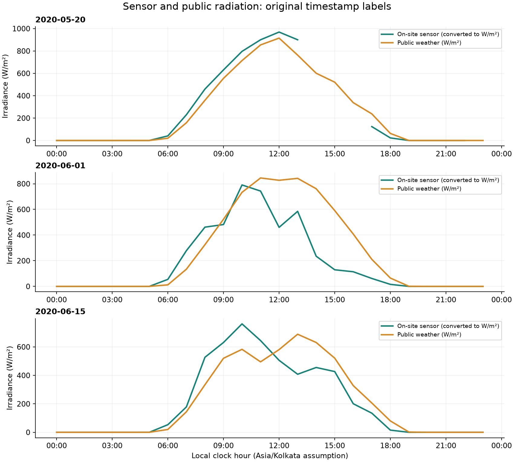
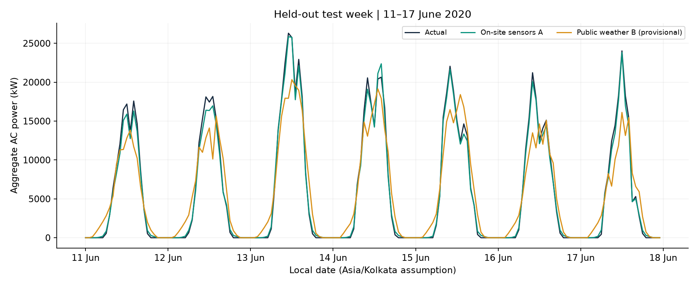
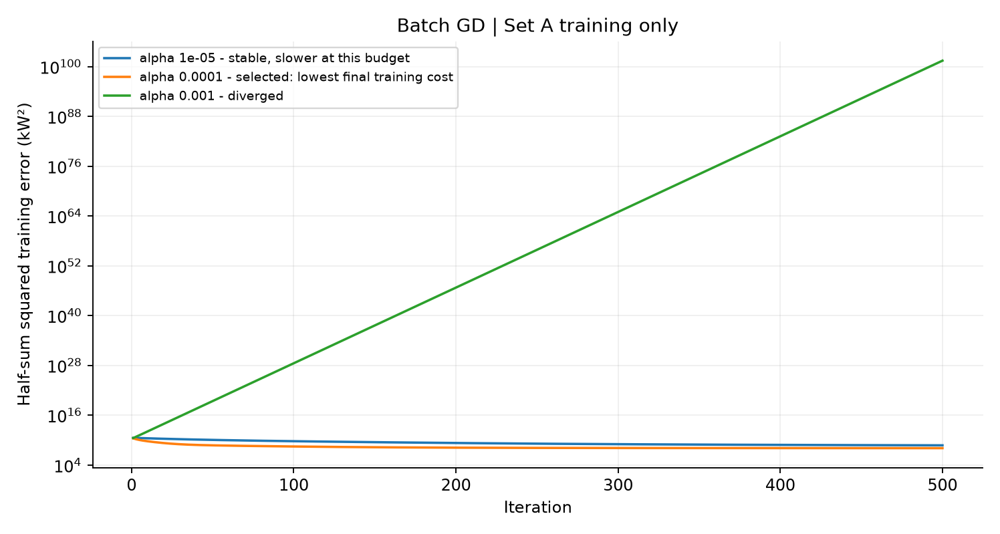
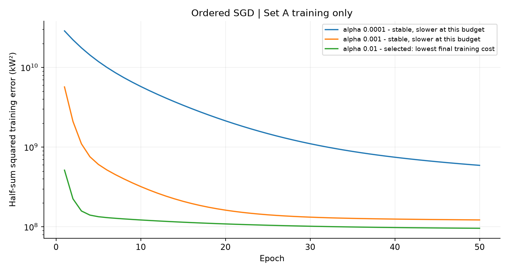
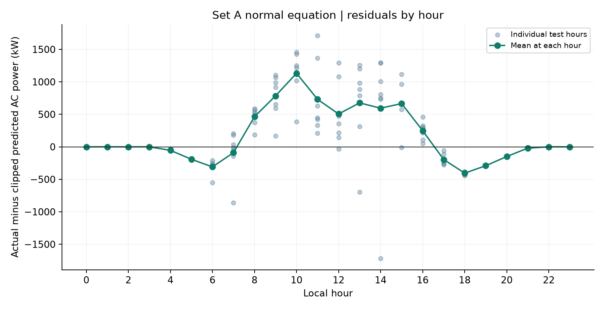
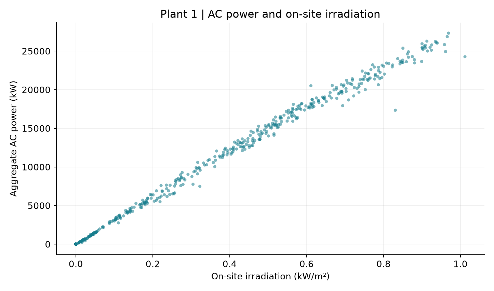
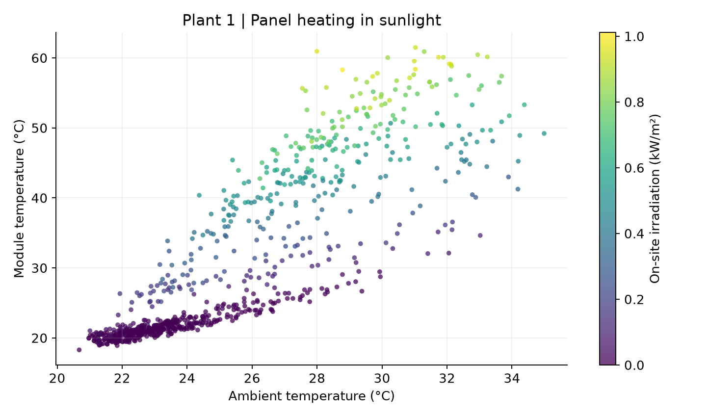
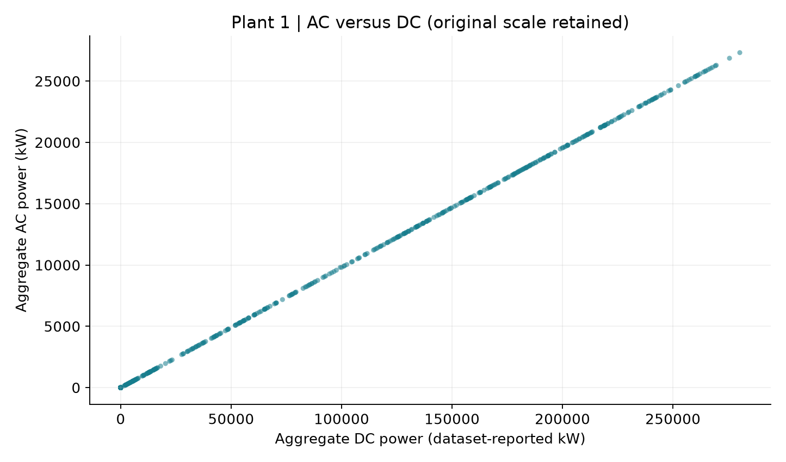
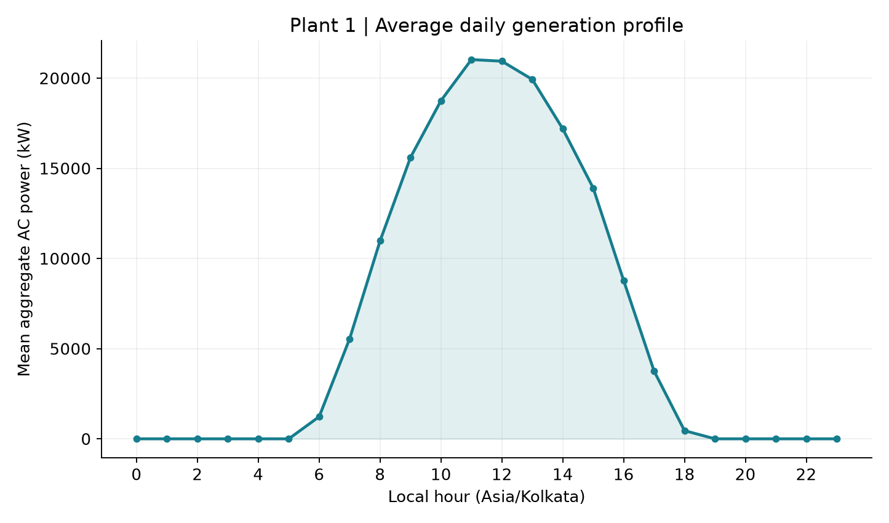

A LITTLE WEATHER. A LOT OF POSSIBILITY.
Weather into watts.
Change the sky. Explore the output.
A small window into the science of solar power.
Clear afternoon
13:00 IST01 / YOUR SCENARIO
Set the conditions
Drag a slider or type a value. Both stay in sync.
The ambient scene follows your selected hour and cloud cover. It is an illustration, not live weather or a calculated sunrise.
02 / PREDICTED AC POWER
MODEL READY— MW·plant-level hourly average
THE PLANT'S DAILY RHYTHM
Following the sun
Historical average AC power by hour, 15 May–17 June 2020. The marker follows your selected time; this curve does not simulate your weather.
Real weights. No retraining.
NumPy linear regression · saved training-only scaler · runs locally
THE NUMBERS BEHIND THE SCENE
Built on evidence, not the animation.
Two feature sets. Three NumPy solvers. The same untouched test week.
| Features | Solver | All hours | Daytime |
|---|
Daytime is measured on-site irradiation > 0, identically for both sets. Negative predictions are clipped at zero. RMSE is not a percentage accuracy or a prediction interval.
Held-out week
How your prediction is calculated
Hour becomes sine and cosine of 2π × hour / 24. Public shortwave radiation, air temperature, cloud cover and the two hour features are standardized using saved training-only means and standard deviations. An intercept is added, then the saved Set B normal-equation coefficients produce kW. Only negative output is clipped. The animation never changes the model output.
What this experiment cannot establish
One plant and 34 days cannot establish rooftop, seasonal or future-forecast performance. Coordinates are approximate; selected days have public-minus-sensor peak offsets of 0, +1 and +3 hours. Missing hours and incomplete inverter coverage are reported in the project. A fixed-rate SGD fit is not claimed to equal the exact least-squares solution.
THE COMPLETE EXPERIMENT
Every plot, in one place.
Original figures from the corrected pipeline. Select any plot to view it at full size.
Model diagnostics 05 FIGURES

Public weather vs on-site sensor
Three-day location check. Radiation is compared in W/m²; peak-time discrepancies remain unresolved.
Download PNG ↓{kind=link}

Actual vs predicted power
The untouched 11–17 June test week: actual output, on-site model A and public-weather model B.
Download PNG ↓{kind=link}

Batch GD learning rates
Training-only half-sum squared error over 500 iterations. The excessive learning rate diverges.
Download PNG ↓{kind=link}

SGD learning rates
Full training cost measured after each of 50 epochs. Individual within-epoch updates are not plotted.
Download PNG ↓{kind=link}

Residuals by hour
Positive residuals mean underprediction. Each hourly mean uses seven test observations.
Download PNG ↓{kind=link}
Exploring the data 04 FIGURES

AC power vs irradiation
The strong association between measured sunlight and aggregate plant power.
Download PNG ↓{kind=link}

Module vs ambient temperature
Colour indicates irradiation, showing how sunlight relates to module heating.
Download PNG ↓{kind=link}

AC vs DC power
The unusual raw scale is preserved; the ratio is not presented as verified inverter efficiency.
Download PNG ↓{kind=link}

Average AC power by hour
The observed daily profile across 34 days, not a seasonal or annual production estimate.
Download PNG ↓{kind=link}